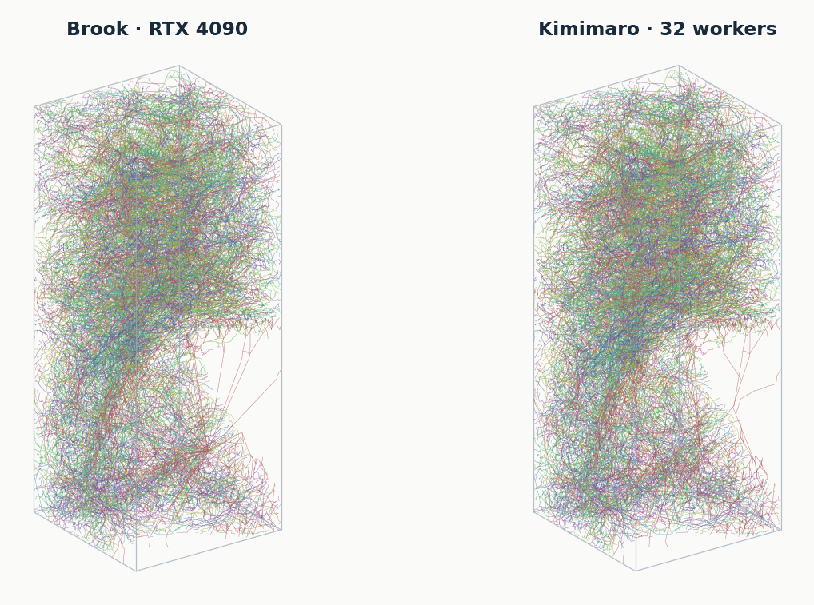

Benchmarks
Brook 0.1.0 on an NVIDIA GeForce RTX 4090 against Kimimaro 5.8.1 on an Intel Core i9-14900KF, Linux. Every time is a complete call, NumPy labels in, osteoid skeletons out.
Twelve datasets
Kimimaro’s default TEASAR parameters for each dataset’s voxel size (its benchmark parameters for the Kimimaro benchmark volume), dust threshold 1000, border and branching correction on. Kimimaro ran with 8 workers on 8 cores, one run per dataset; Brook’s time is the median of three runs after one warmup.
| Dataset | Shape | Objects | Brook s | Kimimaro s | Speedup | Same objects | Identical | Length Δ | Length |Δ| median / p95 | Distance mean / p95 | Endpoints | Pieces |
|---|---|---|---|---|---|---|---|---|---|---|---|---|
| CREMI B EM | 640×640×125 | 324 | 1.03 s (1.03, 1.03, 1.00) | 23.0 s | 22.5× | Same (324 / 324) | 39 | -3.03% | 0.95% / 7.5% | 0.11 / 0.31 | 1,221 → 1,235 | 393 → 393 |
| CREMI C EM | 640×640×125 | 558 | 1.08 s (1.12, 1.08, 1.03) | 22.6 s | 20.9× | Same (558 / 558) | 112 | -1.33% | 0.78% / 6.6% | 0.09 / 0.24 | 2,182 → 2,178 | 821 → 821 |
| CREMI A EM | 640×640×125 | 128 | 1.05 s (1.05, 1.05, 1.06) | 35.9 s | 34.0× | Same (128 / 128) | 32 | -0.49% | 0.06% / 1.7% | 0.07 / 0.06 | 727 → 728 | 156 → 156 |
| Kasthuri11 EM | 512×512×256 | 919 | 1.06 s (1.08, 1.05, 1.06) | 37.2 s | 35.0× | Same (919 / 919) | 128 | -1.90% | 1.29% / 5.8% | 0.12 / 0.26 | 2,882 → 2,882 | 972 → 972 |
| MICrONS EM | 512×512×256 | 1,198 | 1.56 s (1.56, 1.56, 1.55) | 103.9 s | 66.8× | Same (1,198 / 1,198) | 192 | -1.21% | 0.68% / 3.8% | 0.07 / 0.18 | 5,578 → 5,595 | 1,405 → 1,405 |
| H01 EM | 512×512×256 | 1,683 | 1.19 s (1.19, 1.22, 1.18) | 54.0 s | 45.3× | Same (1,683 / 1,683) | 308 | -1.10% | 0.61% / 4.2% | 0.09 / 0.20 | 4,840 → 4,842 | 1,788 → 1,788 |
| FAFB FFN1 EM | 512×512×256 | 5,364 | 1.18 s (1.19, 1.18, 1.18) | 37.0 s | 31.2× | Same (5,364 / 5,364) | 1,707 | -1.55% | 0.52% / 5.0% | 0.07 / 0.19 | 16,411 → 16,440 | 5,476 → 5,476 |
| FIB-25 EM | 512×512×512 | 2,767 | 2.38 s (2.44, 2.38, 2.38) | 131.6 s | 55.3× | Same (2,767 / 2,767) | 1,412 | -0.77% | 0.00% / 3.1% | 0.04 / 0.14 | 7,329 → 7,316 | 2,925 → 2,925 |
| Hemibrain EM | 512×512×512 | 3,624 | 2.69 s (2.74, 2.69, 2.69) | 331.1 s | 123.0× | Same (3,624 / 3,624) | 1,298 | -1.41% | 0.60% / 5.3% | 0.09 / 0.28 | 13,318 → 13,287 | 3,808 → 3,808 |
| Scroll fibres 16 µm X-ray CT | 512×512×512 | 3 | 0.63 s (0.64, 0.63, 0.63) | 26.7 s | 42.1× | Same (3 / 3) | 0 | -7.93% | 7.62% / 8.2% | 0.24 / 0.31 | 6,622 → 6,623 | 2,022 → 2,022 |
| Scroll fibres 8 µm X-ray CT | 512×512×512 | 3 | 0.57 s (0.57, 0.57, 0.57) | 5.6 s | 9.9× | Same (3 / 3) | 0 | -5.26% | 5.38% / 5.6% | 0.17 / 0.22 | 4,313 → 4,318 | 1,825 → 1,825 |
| Kimimaro benchmark EM | 512×512×512 | 1,667 | 3.08 s (3.14, 3.08, 3.03) | 413.4 s | 134.3× | Same (1,667 / 1,667) | 272 | -1.45% | 0.96% / 4.3% | 0.09 / 0.19 | 9,342 → 9,351 | 2,124 → 2,125 |
Length Δ comes mostly from how equal-cost routes are broken: Brook takes straight axial steps where Kimimaro’s order alternates between adjacent slices, so routes of equal cost, with nearly the same number of points, measure shorter. Thin fibres with cubic voxels have the most such ties.
Kimimaro benchmark volume, 512³
Kimimaro’s 512³ benchmark cutout of mouse visual cortex and a 256³ crop, against Kimimaro with 32 workers on all 32 threads and with one worker pinned to one core. Medians of three calls after one warmup. Its branching-correction case is the Kimimaro benchmark row above, timed separately.
| Volume Branching correction | Brook | Kimimaro 32 workers | Kimimaro 1 core | Speedup vs 32 workers | Speedup vs 1 core |
|---|---|---|---|---|---|
| 256³ On | 0.396 s | 24.5 s | 28.0 s | 61.7× | 70.6× |
| 256³ Off | 0.397 s | 22.4 s | 25.7 s | 56.5× | 64.8× |
| 512³ On | 3.115 s | 415.1 s | 858.8 s | 133.3× | 275.7× |
| 512³ Off | 2.674 s | 108.4 s | 232.8 s | 40.5× | 87.1× |

| Main memory | GPU memory | |
|---|---|---|
| Brook · NVIDIA RTX 4090 | 0.7 GiB | 5.6 GiB |
| Kimimaro · 32 workers | 12.7 GiB | not used |
| Kimimaro · 1 core | 3.6 GiB | not used |
Batches
25 volumes of 1 × 1972 × 2024 voxels, median of three runs each: 4.60 s as separate calls, 1.30 s as one batch, identical results. The batch uses more GPU memory (+3,986 MB against +845 MB).
Cite
@software{brook,
author = {Angelotti, Giorgio},
title = {Brook: TEASAR skeletonization on NVIDIA GPUs},
version = {0.1.0},
year = {2026},
license = {GPL-3.0-only},
url = {https://github.com/giorgioangel/brook},
}Brook implements the TEASAR algorithm [1] as Kimimaro does [2]:
- M. Sato, I. Bitter, M. A. Bender, A. E. Kaufman and M. Nakajima. “TEASAR: tree-structure extraction algorithm for accurate and robust skeletons”. In Proceedings of the Eighth Pacific Conference on Computer Graphics and Applications, Hong Kong, pp. 281–449. IEEE Computer Society, 2000. doi:10.1109/PCCGA.2000.883951
- W. Silversmith, J. A. Bae, P. H. Li and A. M. Wilson. Kimimaro: Skeletonize densely labeled 3D image segmentations, version 3.0.0. Zenodo, 2021. doi:10.5281/zenodo.5539913